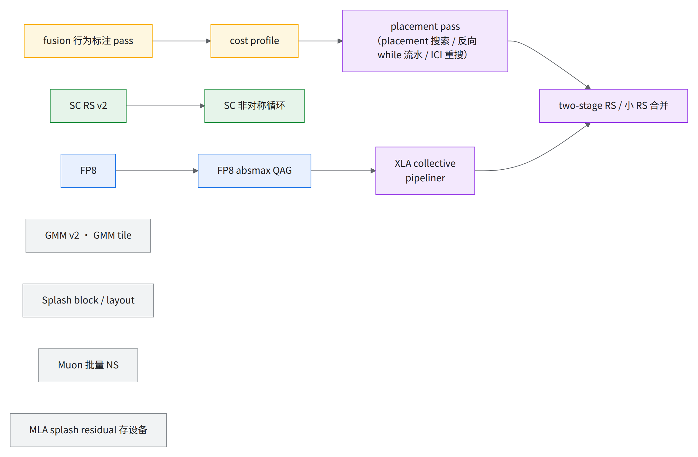
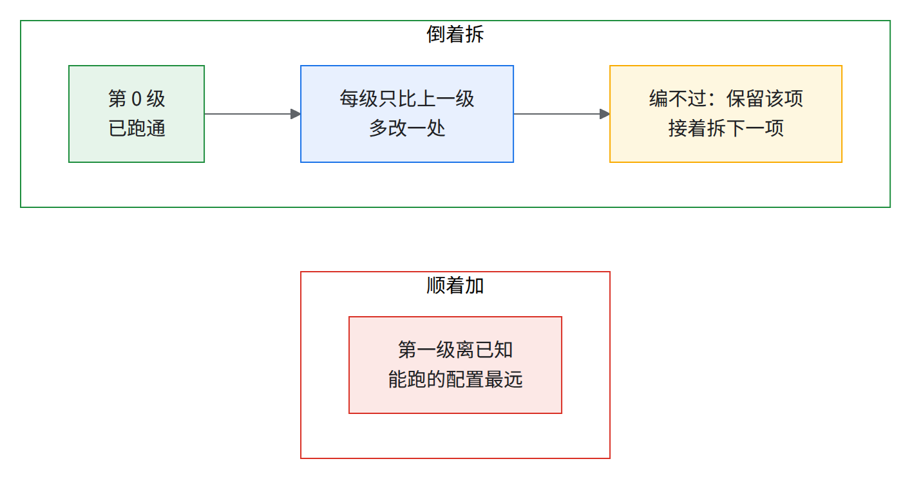
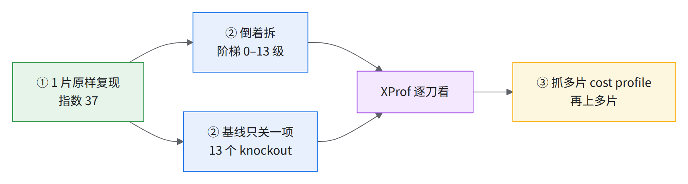
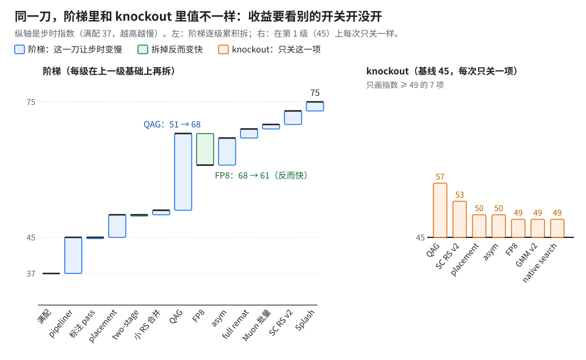
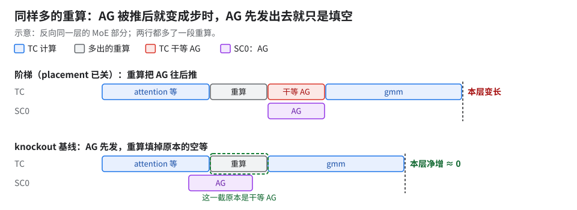
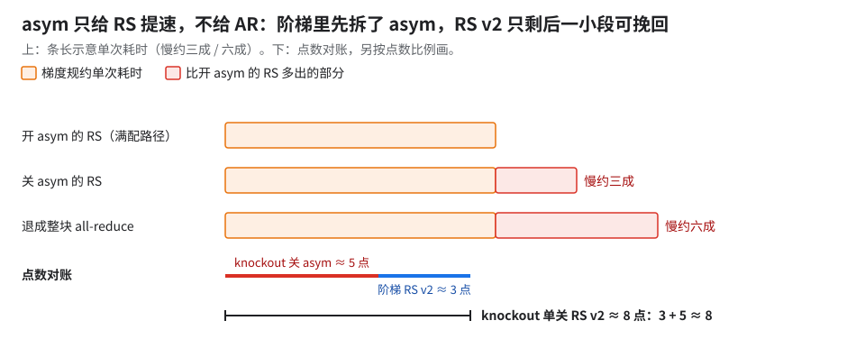
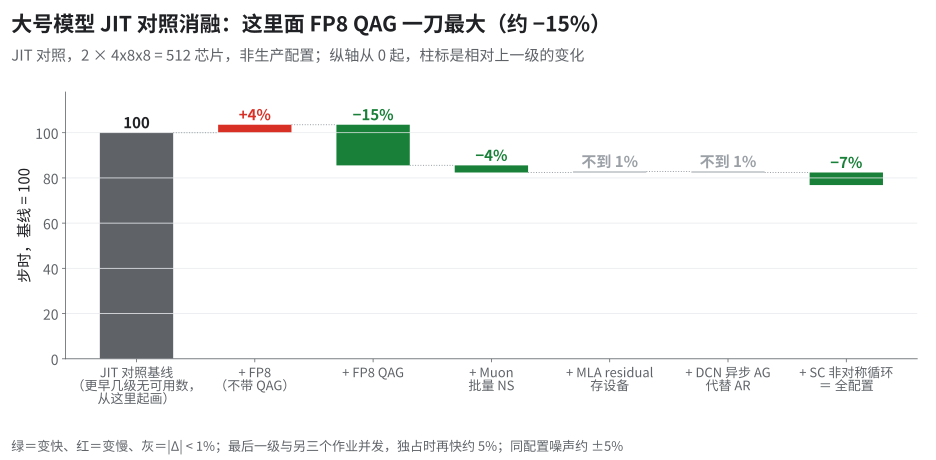
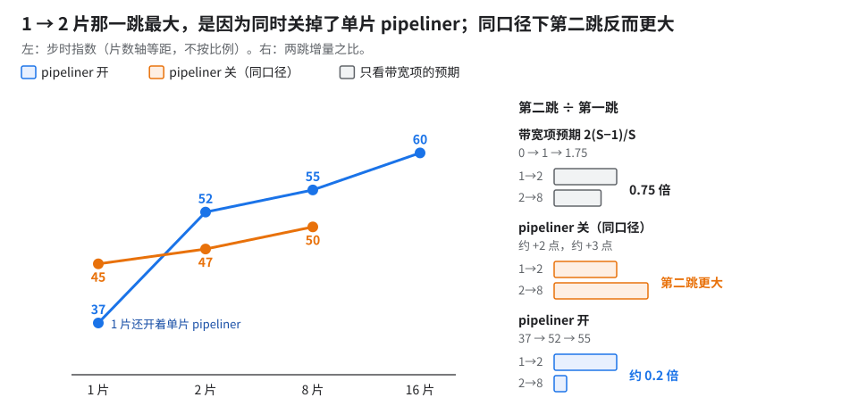

09 · 消融阶梯：一刀一刀拆掉，看每一刀值多少
这套配方叠了十几样优化，大号模型 1 片（256 芯片）一步从指数 100 降到 37。别的团队想照抄，先要知道哪几刀值钱、哪几刀只在特定前提下才值钱。这一章把满配一刀一刀拆掉量回去。
两种拆法互相对照：
- 阶梯：从满配出发，每级在上一级基础上再拆一样，一路退到最差。每一刀的值依赖拆的顺序。
- knockout：在 knockout 基线（第 1 级：满配再关 pipeliner，指数 45）上每次只关一样，其他全开。和顺序无关。
- 同一刀在两边值差很多，说明它的收益要看别的开关开没开（§5）。
被拆的十几样优化之间有依赖，箭头表示「后者值多少要看前者开没开」。

灰色几样没画依赖边，不等于独立：MLA residual（full remat）阶梯里值约 2 点、knockout 里不到 1 点，两边的原始步时增量相差约 4.6 倍，因为它和 placement 有交互（§4.8）；Muon 两边接近；GMM v2 只有 knockout 值，Splash 只有阶梯值，GMM tile 两边都没有（阶梯第 13 级编不过），没法对照。紫色几样互相决定对方的空档，收益的正负会翻。
- 指数 37 满配，1 片复现（与原测差不到 1%）
- 指数 75 倒着拆到第 12 级，比满配慢约一倍
- +35% 单级最大：拆掉 FP8 absmax QAG（指数 51 → 68）
- 13 个 knockout（基线只关一项）
1.怎么拆、怎么读数
1.1 两套口径：JIT 验 loss，AOT 量性能
- AOT 阶梯（主体，§2–§5）：先在 CPU 上编好再上卡，和生产一致，用来量性能。HLO 通信重排（三项：小 RS 合并、two-stage RS、placement，见 02 §7）只在这条路上开得出来。
- JIT 对照（§6）：边跑边编译，配置和 CI 一致，用来验 loss。但 CI 的 JIT 校验模式强制把 HLO 通信重排关，看不到最大的几刀。
- 为什么可以这样分工，依据在 §7.2。
两个「pipeliner」互不相干（02 §16.1）：
- XLA collective pipeliner：上游 pass，开关规则见 11 篇 B01。
- HLO 通信重排里自写的反向 AB 流水（placement 的一部分）：这条流水生产上只在 AOT 开（pass 本身 JIT 也能跑，但 JIT 下 HLO 通信重排保持关，它跟着不生效）；大号模型 FP8 的 CI 在 AOT 模式下开着（JIT 校验模式强制关，见上条）。
1.2 数字怎么读
- 步时一律用指数：大号模型单片 BF16 最初基线 ＝ 100。满配 37，knockout 的基线（第 1 级）45。
- 「这一刀」的百分比＝相对上一级；「累计」＝相对满配 37；knockout 的百分比＝相对它的基线 45。
- 比较阶梯和 knockout 时用「点」：一点＝一个指数点，由原始步时差换算，和表里两个取整指数直接相减可能差 1。
- profile 里的毫秒都换成占比：要么是相对变化（涨 / 降百分之几、几倍），要么是占某一步的百分比（会写明「以谁 ＝ 100」）。
- 噪声：2 片 JIT 对照里同一配置独占和与别的作业并发能差约 5%（来自共享 DCN，§6.1）；1 片 AOT 阶梯不走 DCN，这个 ±5% 不套用。|Δ| < 1% 算没变化，1%–5% 要 profile 机理一致才算。
1.3 AOT 阶梯的实验设置
- 配置：1 片 4x8x8（256 芯片），代码为 1 片基线版，FP8，CPU AOT + HLO 通信重排，cost profile 用生产默认 trace。
- 每级：CPU AOT 编译后上 1 片跑 50 步，profile 抓 step 5–9，步时取第 10–49 步 p50。
- 指代：下文一律按级号称呼（第 1 级＝1 片、HLO 通信重排开、pipeliner 关，也是 knockout 的基线）。
- 第 1 级就关 pipeliner [推断：为对应多片生产配置，多片 FP8 关了更快，见 11 篇 B01]；代价是看不到其余各刀与 pipeliner 的交互。
- 复现成本：并发编译是关键。在一台大 CPU 机器上并发编各级 AOT，编完自动上卡跑 50 步，每级约 50 分钟（事前估算）；个别级单编译超过 2 小时（最长第 2 级约 2.5 小时，第 3、13、1 级都在 2 小时出头，见 06 §10.2 表）；串行时总时长按级数线性涨 [推断]。
为什么倒着拆、不顺着加：

整体顺序：

1.4 profile 读法
- 每一刀对齐同一个 op（如
chunk_kda_bwd/splash_mha_dkv）比较前后，看 TC / SC0 / SC1 三行，取中间那步 xplane。整步合计用prof.txt（按类别）或 xplane（按 op 名或形状）。 - TC＝TensorCore，跑矩阵乘和绝大部分计算；SC＝SparseCore，芯片上另配的小协处理器（每 device 2 颗），本书把集合通信卸到它上面跑，不占 TC（README 速成）。
- RS / AG / AR ＝ reduce-scatter / all-gather / all-reduce；[推断] ＝看得到现象，因果没单独做实验。
- 「TC 干等」＝TensorCore 上的 wait op（hlo_category 为 async-done 或以
wait开头）：与 SC 上那次通信同类名、编号＝SC 上那块＋1，可能带后缀（如reduce-scatter.1018.cloned.1.call-done对 SC 上的 .1017）——认前缀＋类别，不认后缀。wait:*是 prof 脚本的分类名，trace 上看不到。 - 「exposed」＝
prof.txt的exposed_comm_ms：SC 有集合通信在跑、TC 没在计算的时间并集；不等于 TC wait op 合计（SC 空闲时的干等不算，§4.8 就是一例）。 - 「一段」＝两个 MLA 层之间的那些层（MLA 是每个周期的最后一层）。「层」（在逐层对比里）＝反向从一个
chunk_kda_bwd到下一个（本层 KDA + 下一层 MoE 反向）。
2.起点：满配（1 片生产配方）＝ 指数 37
配置见 §1.3，XLA pipeliner 开。
| 配置 | 说明 | 指数 | 慢步 | 对照 |
|---|---|---|---|---|
| HLO 通信重排关 | §1.3 的配置，只把 HLO 通信重排关掉 | 51 | 0/40 | HLO 通信重排关的 nightly 也是 51，差不到 1% |
| 满配 | 原样 | 37 | 0/40 | 生产默认 37，同代码日志重算也是 37，差不到 1% |
- 51 → 37 全部来自 HLO 通信重排：两行只差这一项，步时约 −30%、吞吐约 +40% [推断：由两行原始步时相除，1 − t开/t关、t关/t开 − 1]。
- 卡在
jax.devices()先怀疑节点 / slice，别先怀疑配置：64 host 规模下卡在这一步多半是 slice 激活问题，换一批节点即可。 - 满配这份算「pipeliner 开」[推断：未做对照]：训练 pod 的
XLA_FLAGS是关 pipeliner 那串，但编译产物按PIPELINER=on编（AOT 编译时不带这串XLA_FLAGS）。
ℹ️指数 37 不是最快本章的尺子是生产默认（RS 单 SC）。单片最快做到指数 34（叠了几样），比 nightly 快约 4%（由原始步时算）；生产 nightly 仍单 SC，指数 36。详见 03 §17。
2.1 HLO 通信重排省下的那截去了哪
拿两份 AOT 编译产物（序列化后的可执行文件）开 profiler（step 5–9）重跑，与不开 profiler 的步时差不到 1%。下表以 HLO 通信重排关的步时 ＝ 100（host 0，3 个 profile 步的中位数）：
| 每步 | HLO 通信重排关 | HLO 通信重排开 | 差 |
|---|---|---|---|
| 步时 | 100 | 72 | −28 |
| TensorCore 真在算 | 57 | 61 | +4 |
| TensorCore 干等通信（exposed） | 41 | 9 | −32 |
| 其中等 reduce-scatter | 31 | 2 | −29 |
| 其中等 all-gather | 7 | 3 | −4 |
| SparseCore 做集合通信的总时长 | 65 | 59 | −6 |
| 其中 reduce-scatter | 41 | 34 | −7 |
| 其中 all-gather | 23 | 23 | 0 |
为什么：活没少干，只是塞进了别人干活的空档。 代价是通信挪进计算中间、和计算抢 HBM 带宽，TC 多算约 4（单位同上表）。
GPU 上相当于：FSDP 把第 i 层的梯度 reduce-scatter 放到单独的通信流上，和下一层的反向计算重叠（类比）。
把握：推断 · 出处：数是本段 profile 表的实测；「抢 HBM 带宽」是推断。

读图（示意）：上下两组的 RS 一样多，下面那组只剩最后一层的等待露在外面。
- 怎么确认 placement 真生效：在编译产物（HLO dump）里找下一条的指纹，找不到就是没生效；AOT 产物没带同一套 HLO 通信重排配置时会静默不启用（11 A02），光看步时分不出来。
- placement 的指纹（开 / 关各导一份 HLO 对照看）：
- 反向多出一组 while 循环，循环体里 FP8 权重 AG 和 bf16 专家梯度 RS 交替排列。这组循环只在开了反向 while 流水开关的作业里出现，关掉 placement 或该开关后为 0 个（实测）。
- 大块 bf16 专家梯度 RS 的指令名带上新后缀，不再是光秃的
reduce-scatter.<编号>：要么被挪进上面那组循环，要么是段末那几个指令名带段末标记后缀的。
- 小 RS 合并的指纹：关时的一批小 RS（合计约 9）开了就从 top 列表消失。
- 代价：
tgmm_v2最大那个变慢约 30%。 - 下一步可做的优化 [推断，未实测]：SC 忙 59、TC 算 61，剩 9 藏不住；RS 也做低精度（RS 仍 bf16，占 34；AG 已 FP8，占 23）。
⚠️慢步是 profiler 造成的，不是双峰
- 双峰慢步只在多片上见过：单片不开 profile 0/40。
- 两个 prof 作业各 3 个慢步，全在 step 10–14：profiler 在 step 9 后序列化、上传 trace；step 15–49 波动不到 1%。开 profile 的作业看 p50 不看均值。
3.总表：阶梯 13 级 + knockout 13 项
3.1 阶梯
| 级 | 在上一级基础上再拆 | 指数 | 这一刀 | 累计比满配慢 | 详见 |
|---|---|---|---|---|---|
| 0 | —（满配原样） | 37 | — | — | §2 |
| 1 | XLA collective pipeliner（FP8 保持开；本级即 knockout 基线） | 45 | +25% | +25% | §4.1 |
| 2 | fusion 行为标注 pass | 45 | 不到 1%（噪声内） | +25% | §4.2 |
| 3 | placement pass | 50 | +10% | +35% | §4.3 |
| 4 | two-stage RS pass | 50 | 不到 1%（略快） | +35% | §4.4 |
| 5 | 小 RS 合并 ＝ HLO 通信重排全关 | 51 | +1–2% | +40% | §4.4 |
| 6 | FP8 absmax QAG | 68 | +35%（单级最大） | +85% | §4.5 |
| 7 | 整个 FP8，回到 BF16 | 61 | −10%（反而更快） | +65% | §4.6 |
| 8 | SparseCore 非对称集合通信循环 | 67 | +10% | +80% | §4.7 |
| 9 | MLA splash residual 存设备 → remat_policy=full |
69 | 约 2% | +85% | §4.8 |
| 10 | Muon 批量 Newton-Schulz | 70 | +1–2% | +90% | §4.9 |
| 11 | SparseCore reduce-scatter v2 / ND / padding | 73 | +4% | +100% | §4.10 |
| — | GMM v2 → v1 | CPU 上编不了 | §4.11 | ||
| 12 | Splash attention block / layout 调优 | 75 | +3%（接第 11 级） | +105% | §4.12 |
| 13 | MoE GMM tile 调优＝最差 | 编不过（SMEM 溢出） | §4.13 |
- 5 点以上的大刀：pipeliner（约 8 点）、placement（约 5 点）、QAG（约 18 点）、SC 非对称循环（asym，约 6 点）。
- 拆掉反而变快的是第 4、7 两级。
- 各级 Δ 不能相加：pipeliner 在 HLO 通信重排全开时值约 8 点，HLO 通信重排全关时开它反而慢 1–2%（§4.1）。
3.2 knockout：基线只关一项
基线都是第 1 级（指数 45，即 knockout 基线；pipeliner 关、其余全开）。下文「关 X 的 knockout」＝只关 X 的那一项。和阶梯同一项值接近＝基本独立，差很多＝有交互。
| 关掉什么 | 指数 | 相对基线 | 对应阶梯级 | 详见 |
|---|---|---|---|---|
| placement pass（HLO 通信重排的一项） | 50 | +10% | 第 3 级 | §4.3 |
| two-stage RS pass | 46 | +1–2% | 第 4 级 | §4.4 |
| 小 RS 合并 | 44 | −1–2%（反而快） | 第 5 级 | §4.4 |
| placement 内反向 while 流水开关 | 47 | +5% | — | §4.3 |
| placement 内 ICI 重搜开关 | 45 | 不到 1% | — | 噪声内：各类别几乎不动，temp 少零点一 GB 量级；多片没测 |
| placement 内的搜索 | 49 | +8% | — | §4.3 |
| absmax QAG 开关 | 57 | +25% | 第 6 级 | §4.5 |
| FP8 → BF16 | 49 | +7% | 第 7 级 | §4.6 |
collective_asymmetric_loop |
50 | +10% | 第 8 级 | §4.7 |
remat_policy=full |
46 | 不到 1% | 第 9 级 | §4.8 |
| Muon 批量 NS 开关 | 47 | +3% | 第 10 级 | §4.9 |
| SC reduce-scatter v2 / ND / padding | 53 | +20% | 第 11 级 | §4.10 |
| GMM v2 → v1（带 FP8，走 megablox 老 GMM） | 49 | +9% | —（阶梯里这一级编不了） | §4.11 |
💡读法
- 优化互相依赖，单独拿掉一项，别的项的收益也跟着丢：除 placement 的三个子项，10 项单独关的增量相加约 39 点，阶梯第 12 级比 knockout 基线只慢约 30 点；阶梯底部还开着的 GMM v2 和 tile 调优补不上这个差。
- 关 Muon 批量、关 SC RS v2、关 GMM v2 这三个 knockout 有归类假象（算子进了 other），以 TC 计算 / exposed 总数为准。
- 「cost profile 换回旧版」这一级（另有单项 A/B：只换 profile 快约 7%）没跑；该级位置应在第 2 级前。

读图：同一项左右两边的高低对不上，差就是交互（§5）。
4.逐级拆
4.1 第 1 级：XLA collective pipeliner
拿掉什么：XLA collective pipeliner（上游 pass）。FP8 和 HLO 通信重排都保持开。
整步变化：指数 37 → 45，+25%。梯度 RS 从「下一层一开头就发」退回「本层末尾才发」，TC 算完干等。
- 反向同一类 KDA 层，开时上一层的 3 个 RS 层首就发；关了拖到层末，TC 算完干等（约占关后层长的 35%），反向 KDA 层慢约四成。
- 没少传一个字节，改的是第 i 层梯度 RS 挪到第 i+1 层里发。
- temp 两边都约 93 GB（约 87 GiB，差不到 1 GB）；TC 计算反而少 1–2%。
和 HLO 通信重排的交互：HLO 通信重排全关时，pipeliner 开反比关慢 1–2%（单次 A/B）；全开时值约 8 点，所以各级 Δ 不能相加。第 1 级到第 4 级之间合计只涨约 5 点。
pipeliner 本身的机制（通信推到下一圈、输入跨圈存活）和多片为什么亏，完整说明在 02 §16.3。
规则为什么是「单片 FP8 开 pipeliner、BF16 关」？因为同样关掉它，FP8 配方痛得多：这里慢约 25%；单片 BF16 唯一的对比只慢约 3%（单项 A/B，且是两个 pass 一起关，02 §16.4；开关规则汇总在 11 场景开关表）。
为什么：FP8 把别的通信都缩短了，剩下没缩短的梯度 RS 成了最长那根杆，藏不藏得住就直接是步时。 FP8 + QAG 缩短的是 AG 和 GMM，梯度 RS 仍是 BF16，RS 占层长的比例变大；SC 也从被双倍字节占满变成和 TC 接近平衡，RS 能不能藏进下一层，没有别的等待替它垫着（数见 §2.1「下一步可做的优化」：RS 34 对 AG 23，SC 忙 59 对 TC 算 61）。
GPU 上相当于：FSDP 把第 i 层的梯度 RS 放到通信流上、和下一层的反向计算重叠；关掉它，最长那根通信整根露出来（类比）。
把握：推断 · 出处：本章 §2 与本节数据；BF16 侧没有同一代代码、只切 pipeliner 的对照，判据是同一代码上 BF16 / FP8 各跑一遍 pipeliner 开 / 关。
4.2 第 2 级：fusion 行为标注 pass
拿掉什么：fusion 行为标注 pass。
整步变化：指数 45 → 45，不到 1%，噪声内。
XProf 里：temp_size 和第 1 级逐字节相同，prof.txt 各类别几乎不动，exposed 两边一样。
为什么：它只给下一份 cost profile 打标签，不改这次的调度。关 placement 的 knockout 也佐证：它的 temp_size 和第 3 级（多关标注 pass）逐字节相同，步时差不到 1% → 标注 pass 几乎不起作用。
4.3 第 3 级：placement pass
拿掉什么：placement pass（HLO 通信重排的一项）。它内部可以拆成三个子项：placement 搜索、反向 while 流水、ICI 重搜。
- 阶梯：指数 45 → 50，+10%（约 5 点）。
- knockout（关 placement）：45 → 50，+10%（约 5 点）。两边一致，反向 KDA 层长相差不到 1%。
XProf 里：前向的 AG、反向段末的 RS 都拖到要用时才发，前向、反向各多等一截。
- 前向：开时 3 个 FP8 专家权重 AG 层首就发，TC 无
wait:all-gather；关了拖到 gmm 要用时逐个发，每个 AG 都干等一小截，层长慢约三成。这是典型层，只有前向末尾少数几层干等更长（约为典型层的 2.6–2.7 倍）。 - 反向：段末 3 个 RS（指令名带段末标记后缀）开时挪到后面，TC 在算 tgmm / gmm 和 MLA splash dkv；关了 TC 多等一轮，位置在 MLA dkv 之后（knockout 基线同位置几乎不等）。KDA 层末尾那轮 RS 等待 knockout 基线同位置也有、大小相当，是每层固有的，不是多出来的。
- 整步：SC 通信量不变（差不到 1%）；干等 AG 涨到约 2.5 倍、干等 RS +25%，exposed +35%；TC 计算几乎不变。以基线步时 ＝ 100，前向、反向各多等约 6，合起来对上 exposed 的增量约 11 [推断：两块相加、未扣重叠]。knockout 里形态相同（干等 AG 约 2.5 倍、RS +20%、exposed +35%）。
- 代价：temp 多占一截（关掉它 temp 明显降）。第 3 级编译两个多小时。
三个子项分别值多少（knockout）：
- 关 placement 搜索：45 → 49，+8%。placement 前向那一半主要是它省下的；temp 也明显降，placement 的显存大头来自它 [推断]。
- 前向同一层 AG 又拖到 gmm 前才发，每层干等和层长都和第 3 级一模一样。
- 逐 op 核过：窗口内 AG 等待与
gmm_v2交替；层首的gather_offload_async_done（async-done 类）是 TC 等 SC 做本地 gather，不是网络通信。 - 前向干等 AG 涨到约 16 倍，和第 3 级几乎一样 [推断]；以基线步时 ＝ 100，干等 AG +6、RS +3，exposed +9，TC 计算 −1。
- 关反向 while 流水开关（反向跨迭代排通信）：45 → 47，+5%。placement 反向那一半就是它做的。
- 按步时算，它约占 placement 整体的四成 [推断：两项 knockout 原始步时增量相除]。
- 开着时（knockout 基线下）：在反向一段末尾，下一段的 FP8 AG 提前发（反向 AB 流水），本段末 3 个 RS（带段末标记后缀）后挪，TC 不等。
- 关后：这 3 个 RS 在 tgmm 一开始就发。多出的一轮等待和上一条「反向」里说的是同一类（梯度 RS 没藏住），位置在 MLA dkv 之后，下一段 AG 等它们完才发；dkv 到下一个
chunk_kda_bwd这一截拉长约七成。 - 整步：干等 RS +20%、干等 AG −40%、exposed（并集口径）+15%；SC 通信量、TC 计算不变；temp 只少约 1 GB。
- 关 ICI 重搜开关：不到 1%，噪声内；多片没测。
- 三个子项的增量相加约 6 点，多于 placement 整体约 5 点，有重叠 [推断]。placement 的约 5 点由 placement 搜索和反向 while 流水分担。
4.4 第 4、5 级：two-stage RS 和小 RS 合并
拿掉什么：第 4 级拆 two-stage RS pass，第 5 级再拆小 RS 合并（到这里 HLO 通信重排全关）。
- 阶梯：第 4 级 50 → 50，不到 1%（略快）；第 5 级 50 → 51，+1–2%。两刀都在 1 点以内。
- knockout：关 two-stage 45 → 46，+1–2%；关小 RS 合并 45 → 44，反而快 1–2%。
- 同一项 two-stage，阶梯里帮倒忙、knockout 里帮忙，因前提不同差约 1 点。
XProf 里（阶梯）：同一个反向 KDA 层的尾巴，三级对比：
- 第 3 级：大 RS 前一串小 RS 被 two-stage 拆两段，单个都很短；TC 干等 3 个大 RS。
- 第 4 级（再关 two-stage）：几个合批小 RS，单个比第 3 级的长几倍；干等和第 3 级几乎一样：小 RS 算一块发一块，起止由计算节奏定（都在
chunk_kda_bwd之后不久起止）[推断]。整步 SC 上 RS 略多（以第 4 级步时计 1–2%）、exposed 略少（不到 1%），接近噪声。 - 第 5 级（再关小 RS 合并）：一串小 RS 首尾相接；大 RS 被推后约 8% 才发，干等比第 4 级多约 15%。整步干等 RS +15%，TC 计算反少 1–2%，抵掉大半 [推断：小 RS 合并开时多出的 TC 是合批的拼接 / 切分]。
- 小 RS 合并的效果：最多的一类小 RS 合批后降到约六分之一，第二类降到约四成；SC 合计省约 6%（以第 5 级步时计），步时只省 1–2%。小 RS 单个耗时由发起开销主导（延迟主导），大 RS 不变。
- 第 4 级和第 0 级比：通信量几乎一样（RS +2%、AG 不变），差全在藏不住：干等 RS 涨到约 12 倍、AG 约 2.7 倍，exposed 约 3.9 倍；TC 计算少 1–2%。第 4 级已比「pipeliner 开 + HLO 通信重排全关」（指数 51）快 2–3%。
- 小 RS 时长与大小无关（发起的固定开销主导）：小 RS 合并砍个数，two-stage 砍单个延迟。
XProf 里（knockout）：
- 关 two-stage：以基线步时 ＝ 100，SC 上 RS +3、干等 RS +2；TC 计算不变；temp 省约 3 GB。首末段的层切成快层、中间各段变慢，合起来 +1–2%。
- 关小 RS 合并（knockout 里关掉反而快）：整步 exposed −1，省下的几乎都在反向第一段。
- 反向第一段里同一个 KDA 层：基线 pack 拼好小梯度后 3 个大 RS 挤在层末一起发；关后一个层首就发、另两个在 tgmm / gmm 期间发，TC 只在 gmm 后补等一小截，层长短约两成。第一段之外的段只省一点。
- 整步：干等 AG −20%、RS −1–2%，SC 上 RS 略多，TC 计算 −1；pack 拼接（约占步时 1–2%）没了。
- 代价在显存：temp 涨到 100 GB（约 93 GiB，基线约 87 GiB；同 06 §10.2 knockout 表那个数），离 94.74 GiB 上限不到 2 GiB [推断]；pipeliner 开时没测。
- 只有第一段（和最后几层）翻成「先发 AG、再发 RS」的快层，干等 RS 少一半多（见 §5.2）；为什么是这几段没查。
- 小 RS 合并省了发起次数，却把大 RS 绑在层末 [推断]。阶梯第 3 → 4 级（placement 已关）没有快层，每层略短约 1%，所以是略快。
为什么：拆两段、合一个，改的只是 RS 的形状；值不值钱，看它落进的那个空档还空不空，而空档是别的开关定的。
- 三样东西一起决定空档：placement 把 RS 排在程序哪里，pipeliner 让它留在本层尾还是挪到下层头，快慢层决定 AG、RS 谁先发。
- 小 RS 合并省了发起次数，却把大 RS 绑到层末；two-stage 降了单个延迟，却多出一组要排的事件。
- 空档一变，同一刀就从帮忙变成添堵（关 two-stage：knockout 里慢 1–2%，阶梯里反而略快），所以阶梯增量不能相加。
- 只有小 RS 挡住大 RS、大 RS 又挡住 TC 时，它们才变成步时。
GPU 上相当于：two-stage 像手工做的两级 reduce-scatter（先在节点内高带宽链路上规约、数据缩小后再走跨节点慢链路）；小 RS 合并像 DDP 的梯度分桶（
bucket_cap_mb），合批省发起开销（都是类比）。把握：推断 · 出处：本节、§5.2 与 §4.1 的交互数据。
4.5 第 6 级：FP8 absmax QAG
拿掉什么：absmax QAG 开关——先量化、再 all-gather。拆掉后专家权重按 BF16 搬，量化搬到每卡每层收齐后重做。
- 阶梯：指数 51 → 68，+35%，单级最大（约 18 点）。
- knockout（关 QAG）：45 → 57，+25%（约 12 点）。
- JIT 对照（2 片，§6）：加上 QAG 快约 15%。
- 前向同一层，关后专家权重按 bf16 gather，每个耗时翻倍，TC 干等约占关后层长的四成，gather 完再在本地量化，一层慢约八成。
- 整步 SC AG +75%、量化 loop fusion 约 2.2 倍、干等 AG 约 3.9 倍（前向约 2.7 倍、反向约 8.5 倍）；exposed +55%。再量化 fusion 里最大的两个各占步时 1–2%，都在 routed MoE。
- 字节减半、整步 AG 却只差约 1.8 倍：符合每个集合通信有一截与字节数无关的固定开销（§4.4「小 RS 时长与大小无关」同理）[推断：两者 SC AG 时长相除]。
XProf 里（knockout）：以基线步时 ＝ 100，AG 回到 bf16（SC AG +20，约 1.8 倍）；干等 AG 涨到约 7 倍（+21）、等 RS 反降约七成（−16）；本地再量化 loop fusion 约 2.5 倍（+21）。AOT temp 超单卡上限但实机跑通，已核对：temp 高估一截，实机峰值约 89 GiB（06 §10.3）。
阶梯和 knockout 为什么差约 6 点：knockout 里关 QAG 后 RS 改排到 AG 后面，RS 干等少一截，抵掉一块。
- knockout 基线：反向 KDA 层 3 个 FP8 AG，TC 基本不等；关 QAG，bf16 AG 单次翻倍，干等约占层长两成多，还要本地量化，但上一层 3 个 RS 排到 AG 后、藏在量化和 gmm 底下，TC 不等。多出约 20 的量化和约 20 的 AG 干等，RS 干等少约 15 抵掉一块（以基线步时 ＝ 100）。以第一个 tgmm 为界，前向 +75%、反向只 +15%，增量约六成在前向。
- 阶梯拆 QAG 时 placement 已关，RS 干等不动（差不到 1%），全额体现：前向 +70%、反向 +25%，增量前后各一半。
JIT 对照里：AG 单次减半（FP8），SC 上 AG 时间约降四成，TC 等 AG 降约 65%；每 device 只量化自己 1/512 分片，量化 loop fusion 降约 45%，TC 计算 −15%。FP8 在这个模型上省的是通信，不是乘法（同 04 篇）。
上游有没有：这一刀上游没有，需自行实现（absmax 标定的 QAG）。上游那条「本地量化后再 gather」的路径只接 fixed 标定，而 fixed,-224,224 在长跑里出尖刺、毁收敛（04 §2.2）。
外部团队想拿回这 25–35%，要自己实现 absmax QAG；最小骨架和上游能走到哪一步见 04「上游没有 absmax QAG：外部团队要自己做什么」，收益能拿回几成未测。QAG 为什么非要那几道锁、缺一道为什么不报错，见 04「五道锁」一节。
4.6 第 7 级：整个 FP8 → BF16
拿掉什么：整个 FP8（Qwix fp8_full，前向 E4M3 / 梯度 E5M2，末 2 层 BF16），回到 BF16。阶梯拆它时 QAG 已经没了，所以拆的是「不带 QAG 的 FP8」。
- 阶梯：指数 68 → 61，反而快约 10%（约 7 点）。
- knockout（关 FP8）：45 → 49，慢 7%（约 3 点）。连方向都反了。
- 关 QAG 的 knockout 比关整个 FP8 的还慢约 20%（57 对 49；百分比由原始步时算）：不带 QAG 的 FP8 比不开 FP8 还亏。
- JIT 对照（2 片，§6）：加上不带 QAG 的 FP8 慢 4%。
XProf 里（阶梯）：第 6 级的 AG 已是 bf16，第 7 级再把 gmm 换回 bf16，§4.5 那层的量化 fusion 就没了，所以反而快：前向同一层 3 个量化 fusion 消失，层长短约 15%（trace 已确认）。整步 SC 通信约占步时七成，头两名 bf16 专家权重 AG、专家梯度 RS 各占约两成；TC 计算约占一半。
- 反向第 3 个 KDA 层，整个 FP8 关后 3 个 bf16 专家权重 AG 和 RS 挤在 SC1，干等 AG 约占层长两成；上一层 3 个 RS 排在 AG 后，TC 在算 tgmm / gmm 不等；这层反比 knockout 基线短约 9%。
- 整步净账平：以基线步时 ＝ 100，exposed −3（AG 等待涨、RS 等待降）；GMM bf16 +9、KDA +6、省掉量化 −7；temp 多占一截。
- 分前后向：前向 +50%（干等 AG 涨到约 16 倍，routed MoE、KDA 计算也各多一点），反向 −4%（非等待约 +7，干等 −35%，其中 RS 降约九成、AG 涨到约 4.9 倍）。
- BF16 反向变快是 RS 换到了晚发的位置，不是算得快；pipeliner 开的配方没有这段空等，FP8 省的计算应能体现 [推断：没有在 pipeliner 开的配方上做关 FP8 的 knockout]。
JIT 对照里：乘法快一截（convolution fusion −35%，含 GMM 的 Pallas custom-call −15%），但新增量化 loop fusion 涨到约 4.3 倍，TC 计算反而 +15%；专家权重 AG 仍按 BF16 搬，单次耗时不变。和 04 篇里小号模型上不带 QAG 的 FP8 比 BF16 慢约 15% 是同一个机理（这里是整步慢 4%，不是同一个数）。
为什么：不带 QAG 的 FP8，等于让 FSDP 组里的 F 张卡把同一份量化活各干一遍。 量化要把张量读两遍、受带宽限制，省下的乘法不够付。所以在 knockout 基线上关 FP8，方向反过来。阶梯里先拆 QAG 再拆 FP8 是按依赖：QAG 量化的是 FP8 权重。
GPU 上相当于：FSDP2 + float8 训练不开 float8 all-gather 时，每卡也是先收齐 BF16 权重再各自转 FP8；开了它就是 QAG 这条路（类比）。
把握：公开资料 · 出处：Transformer Engine 文档 FP8 Current Scaling（「Quantization is a memory-bound operation that requires reading the tensor twice」）；本章 §6 JIT 对照；torchao
Float8LinearConfig(enable_fsdp_float8_all_gather=…)。
机制图见 04 §4 动图。
⚠️关开关要显式写关值（
quantization=），不要删键
- 删键会让这一级失败：删了 CLI 上的
quantization表示关 FP8，编译端回落到 base.yml 的 NONE，训练端却读生产 yml 得到fp8_full，和同时传的use_qwix_quantization=false冲突，报 ValueError。补quantization=才出数。- 两端各按自己的配置链解析，删键后谁读到什么不可控；阶梯累积，第 8–13 级全继承这个删法，都得补。
- 这里报错是幸运情况；值不冲突时可能静默编出和训练端不一样的程序 [推断]。AOT / 运行时 flag 不一致的更多实例见 11 附表。
4.7 第 8 级：SparseCore 非对称集合通信循环
拿掉什么：--xla_tpu_collective_asymmetric_loop=true（下称 asym）。纯运行时 flag，不改 HLO；libtpu 默认就开。
- 阶梯：指数 61 → 67，+10%（约 6 点）。
- knockout（关 asym）：45 → 50，+10%（约 5 点）。
- JIT 对照（2 片，§6）：加上它快 7%（对并发时段的全配置）；对独占时段的全配置快约 10%。
- 反向同一个 KDA 层，op 编号、次序不变，每个 RS 变慢（小 RS、大 RS 都慢约三成，两个方向一样），TC 干等多约一半。SC 上 RS 本体变慢是增量大头，发起也略推后（SC op 时长可能含等对端，拆分未定）。AG 不变。
- 阶梯整步：SC RS +30%、干等 RS +50%、exposed +25%，TC 计算不变（差不到 1%）。RS 已在关键路径上，慢多少步时就慢多少。
- knockout：RS 每个慢约 30%；以基线步时 ＝ 100，SC 上 RS 多出约 11 ≈ TC 干等 RS 多出约 11 ≈ 步时增量。temp 与 knockout 基线逐字节相同。
- JIT 对照：专家梯度 RS 每次快约 25%（两个方向一样），与 4x8x8 微基准快约 25% 几乎一样；SC 上 RS −25%，TC 等 RS −30%、等 AR −45%，TC 计算没动。JIT 无 HLO 通信重排时反向 RS 基本没藏住：RS 快多少，步时就快多少。
阶梯和 knockout 为什么差约 1 点：阶梯拆它时 two-stage 已关，小 RS 合计 +35% 也被拖慢；knockout 基线里小 RS 合计只占步时 1–2%，开关都一样 [推断：小 RS 有一部分和计算重叠，没有逐个核对]。
asym 本身怎么做到的：机制未公开：libtpu 文档和开源 XLA 里都没有这个 flag 的实现。「切片各轴不等长，让各轴按各自步数走」只是假说 [推断]，判据是在各轴等长的切片上只翻这个 flag 跑同一个微基准。它和 SC RS v2 的关系见 §4.10。
4.8 第 9 级：MLA splash residual 存设备 → full remat
拿掉什么：MLA splash residual 在 remat 时存设备（custom remat，把 MLA Splash 残差的存放位置设为 device），改回 remat_policy=full。
- 阶梯：指数 67 → 69，约 2%（约 2 点）。
- knockout（改回 full remat）：45 → 46，不到 1%。
- JIT 对照（2 片）：不到 1%，噪声内。另有 256 芯片 FP8 上的一组单项 A/B：存设备比 full remat 快不到 1%。
- 反向同一个 MLA 层，dkv 前多一次
splash_mha_fwd重算，把 MoE 的 AG 往后推，干等多约一半；dkv 不变。 - 时间换显存（每步
splash_mha_fwd个数近乎翻倍）：MLA attention +15%；整步 TC 计算 +1%（重算落在 custom-call +3%、sort +50%），TC 三类 wait +1–2%（主要干等 AG），两项合计与整步增量（约 2%）大体吻合（各项分别取整）；exposed 不变。换来 temp 明显降。 - 多出的等待落在 SC 没跑集合通信的时段，所以 exposed 不变 [推断：由 exposed 的定义反推，TC 那时在等什么没查]。
为什么 knockout 里几乎不值钱：AG 跟着提前，重算填掉原本的空等（本节末图）。
- 反向第 2 段里一个 KDA 层的 MoE 部分，knockout 基线 3 个 FP8 AG 到 gmm 前才发，干等一小截；改回 full remat 后第 1 个 AG 在一个 custom-call 前就发、明显提前，多一点 router
top_k重算，gmm 到点直接算。 - 阶梯里每段都净增；knockout 一段净增约 0（§5.1 表里每层干等 AG 几乎归零），那不到 1% 几乎全在最后一段：那一段干等 RS 翻倍，原因没查。
- knockout 整步：以基线步时 ＝ 100，TC +2（MLA、custom-call、sort 都多一点），exposed −1 部分抵消；temp 只少零点几 GB。

读图（示意）：两行灰块一样长，下面那行的落在原本干等 AG 处。
JIT 对照里：MLA 的 TC 时间降约 15%（省掉前向重算），但本来就藏在通信等待下；TC 等通信 −9% 与步时不同向，属抖动。2 片 JIT 下只换来多占一截 HBM（峰值回升到 84 GiB，上限 94.74）。
4.9 第 10 级：Muon 批量 Newton-Schulz
拿掉什么：Muon 批量 NS 开关（shard_map 批量做 Newton-Schulz），退回逐参数 Muon。
- 阶梯：指数 69 → 70，+1–2%（约 1 点）。
- knockout（关 Muon 批量）：45 → 47，+3%（约 1 点）。两边几乎一样：代价全在步末优化器，前面拆什么都碰不到它。
- JIT 对照（2 片）：快 4%，仍在噪声带内（虽是同时段对比），确定的收益是省下一截 HBM。小号模型 64 芯片上的单项 A/B 快 1–2%。
- 一步最后那一截（约占步时 2–3%），批量版
all_to_all按形状打包成批做 NS；逐参数版变成一串小 AG：TC 干等约为 SC1 上小 f32 AG 总时长的三分之二，尾巴拉长到约 3.3 倍，多出的部分对上整步增量。 - 整步 exposed +3%（主要干等 AG +6%），TC 计算 +1–2%，Muon 算子落进 other（+40%）。temp 明显回升，编译从约 45 分钟涨到一小时出头。
- 每步最后那一截（约占步时 6%），批量版优化器小算子很少，SC0 只有 4 个堆叠 f32 AG；逐矩阵版一串小 AG 加一批 all-reduce，最后约占步时 4% 的那段里 TC 只有不到一半时间在算，其余在干等 AG。
- 前向和反向主体几乎不变，步尾拉长到约 2.2 倍。
optimizer(muon)类几乎归零是归类假象：NS 矩阵乘进了 other。 - 以基线步时 ＝ 100：exposed +3；SC AG +3、all-reduce +1、干等 AG +2；TC +1。temp 反而省一截（批量更新要同时摆出中间量）。
- JIT 对照里 TC 等 AR、等 AG、TC 计算都只降几个百分点，无集中变化。
ℹ️temp 方向两边相反阶梯里拆掉批量版后 temp 明显回升（批量版省 temp）；knockout 里拆掉反而省一截（批量版多占，批量更新要同时摆出中间量）。步时同号。阶梯里为什么反过来，未核。
4.10 第 11 级：SparseCore reduce-scatter v2 / ND / padding
拿掉什么：三个 libtpu flag，让专家梯度 RS 走 SC v2（加 ND、加 padding；不开 padding 前两个不生效）。单算子快约 20%。
- 阶梯：指数 70 → 73，+4%（约 3 点）。
- knockout（关 SC RS v2）：45 → 53，+20%（约 8 点），约是阶梯的 2.7 倍 [推断：两边原始步时差相除]。
- JIT 对照（2 片，全配置上单关这组 flag）：约 +10%，编译 HBM 超出单卡上限。
- 反向 MLA 层末尾，开时 3 个专家梯度 RS 只用 SC0；关了退成整块 all-reduce，两颗 SC 占满，单次 AR 比 RS 慢约两成，TC 干等多约 25%。
- 整步 SC 上 RS 归零、AR 从几乎没有涨到和原来 RS 差不多；干等 RS 换成干等 AR，多约 15%；exposed +9%，TC 计算不变 [推断：AR 后本地各取一片]；temp 多占一截。
XProf 里（knockout）：单次慢约六成；以基线步时 ＝ 100，TC 干等 all-reduce 约 47（原干等 RS 约 24），exposed +20，TC 计算反而 −2；temp 多占一截。
- 同一个反向 KDA 层：关 asym 每个 RS 慢约 30%；关 RS v2 退成整块 all-reduce（层长见 §5.1 表）。
- asym 只给 RS 提速，不给 AR：AR 开关 asym 都一样。

读图：看下方对账线。
- 约七成 RS / AR（knockout 基线和关 SC RS v2 的 knockout 都是）op 名落在反向 while 流水生成的那组循环里（指纹见 §2.1）。
为什么它还管显存：关掉后不是一个变慢的 RS，而是整张量 all-reduce。这组 flag 不只管快慢，还决定 RS 缓冲放哪；退成 all-reduce 后每卡要放整张量结果，显存跟着涨（JIT 里超上限，AOT knockout 里多占一截）。
4.11 GMM v2（阶梯里编不了，只有 knockout）
拿掉什么：Tokamax GMM v2（支持 kernel 内 all-gather 权重），退回 v1（ragged_dot）。
阶梯里为什么编不了：BF16 + use_gmm_v2=false 走 tokamax.ragged_dot(mosaic)，按默认设备（AOT 时是 cpu）判 supported_on，直接 NotImplementedError。所以 GMM v2 这一级没数，第 12、13 级保留 GMM v2。
整步变化（关 GMM v2 的 knockout，带 FP8，走 megablox 老 GMM）：45 → 49，+9%（约 4 点）。v1 核比 v2 慢 20–55%。
- 前向同一个 KDA + MoE 层，v1 的 3 个
pallas_tpu_ragged_dot_gmm都比gmm_v2慢，还多了clamp_convert/abs_reduce量化 fusion；AG 到 gmm 前一刻才发，前向每层慢约 25%。 - gmm 核合计 +35%。增量前向、反向各一半左右：前向是多算和多等各半，反向是多算、少等。一部分 v1 核归进了 other。
- 增量里计算占大头（约 85%），exposed 只多 1–2%（以基线步时计）；temp 多占一截。
- 反向每层干等 RS 少约两成：多算填空等、全翻成 AG 先发（§5.2），这组数据拆不开 [推断]。v1 下 AG 为什么没提前发没查。
4.12 第 12 级：Splash attention block / layout 调优
拿掉什么：MLA splash block 调优（512 → 2048/1024）和 Q/K 的 SEQ_MINOR 布局，6 个 block 全退回 512 + HEAD_DIM_MINOR。单 kernel 调优后快约一半。
整步变化：阶梯指数 73 → 75，+3%（约 2 点，接第 11 级）。
- 钱全在计算：反向同一个 MLA 层，fwd 慢约四分之三、dkv 慢约八成，reduce_sum、两个 pad 涨好几倍（这两类原本就有，不是新出现的），是换
HEAD_DIM_MINOR后要补的搬运 [推断]；AG 干等两边一样。 - 整步 MLA attention 约 1.8 倍，TC 多出的 2–3% 几乎全在它；exposed 不变（差不到 1%）；xplane dkv +80%、fwd +75%。temp 省约 2 GB。
4.13 第 13 级：MoE GMM tile 调优（编不过）
拿掉什么：GMM tile 调优。调法：微基准扫 GMM 的 18 个 tile 维度，EP=1 下一组比 base.yml 默认值小的 tile_m 全面胜出（写进大号模型的配置）；这一刀单独量过（单项 A/B）：快约 8%（05 §7）。
结果：12 组 w{i,o}_tile_{fwd,dlhs,drhs}_* 从调好的值退回 base.yml 默认（batch_seq=512 等）后，编译两个多小时后失败，阶梯止于第 12 级：
RESOURCE_EXHAUSTED: Ran out of memory in memory space smem. Used 1.01M of 1.00M smem. Exceeded smem capacity by 9.8K
- 溢出的是片上约 1 MiB 的标量存储（SMEM），不是 HBM；报错点在一组调大的 tile 上。
- 调好的
batch_seq比默认 512 还小，不是「tile 越小越占 SMEM」。
为什么：SMEM 是编译期一次分好的小格子，超一点就编译失败，不会退化成变慢。 SMEM 是标量单元专用的小存储，放分组表、预取的标量，没有溢出到 HBM 的路（文档对 VMEM 超限也说报编译期 OOM；VMEM 是向量单元旁的暂存区，类比 GPU shared memory，容量和作用域不同）。占用随专家数涨、本就贴着上限，tile 一变展开的 DMA 数跟着变，就可能越线，不单调。机理主场在 05 §7.3 的「SMEM 溢出长什么样」。
把握：推断 · 出处：JAX 文档 Pallas TPU details（scalar memory 一节；SMEM 用途是文档证实）；tokamax TGMM kernel 的 SMEM scratch 与
zero_out_start展开循环。静态分配、超了即失败与本例报错一致；为什么偏偏这组 tile 越线是推断。
4.14 只在 JIT 对照里测的：DCN 上用异步 AG 代替 AR
拿掉什么：--xla_tpu_prefer_async_allgather_to_allreduce=true。
整步变化：JIT 对照（2 片）不到 1%，噪声内，大号模型、FSDP=512、2 片没复现出收益。那个约 20% 的收益是在小号模型、2 × 4x4x4、FSDP=128 上量的（另见 03 §3）。
XProf 里：SC 上的 AR 和 TC 等 AR 的时间都涨了约 15%，方向和预期相反，但在抖动范围内。
为什么 [推断]：大号模型跨 DCN 的主要是梯度 all-reduce，暴露时间被别的等待盖住；要同时段 knockout 才能下结论。
5.为什么同一刀在阶梯和 knockout 里值不一样
5.1 先看 knockout 基线自己的短板：反向每层白等三分之一多
knockout 基线每个反向 KDA 层干等上一层 3 个专家梯度 RS，约占层长的 35%；knockout 在反向值多少，看它怎么改这段空等。逐层中位（层长在基线中位 0.6–1.3 倍之间的层），全表以基线层长 ＝ 100 归一：
| 配置 | 层长（逐层中位） | 干等 RS | 干等 AG | 干等 AR | 快层占比（层长 < 91） |
|---|---|---|---|---|---|
| 满配（pipeliner 开，指数 37） | 72 | 2 | 5 | 0 | 大多数 |
| knockout 基线 | 100 | 37 | 4 | 0 | 少数 |
| 关 asym | 113 | 50 | 4 | 0 | 无 |
| 关 SC RS v2 | 116 | 0 | 0 | 60 | 无 |
| 关 QAG | 112 | 14 | 24 | 2 | 个别 |
| 关 FP8 | 91 | 1 | 22 | 0 | 几乎全部 |
| 改回 full remat | 98 | 37 | 0 | 0 | 无 |
| 关 GMM v2 | 102 | 29 | 6 | 1 | 个别 |
| 关 two-stage | 103 | 40 | 4 | 0 | 少数 |
| 关小 RS 合并 | 99 | 38 | 4 | 0 | 少数 |
| 关 placement / 反向 while 流水 / placement 搜索 / ICI 重搜 / Muon 批量 | 100–101 | 36–37 | 2–4 | 0 | 个别～少数 |
- 让 RS 变慢的（asym 关、RS v2 关）：一比一进步时。
- 让反向多算的（full remat、QAG 关、GMM v1）：多的计算先填空等，knockout 低估这一刀；QAG 关和 GMM v1 还翻了 AG / RS 发出顺序（§5.2）。
- 让 RS 换时机的（FP8 关，及小 RS 合并 / two-stage 关后首末段）：RS 排到 AG 后、跟 tgmm / gmm 重叠；FP8 开的快层干等 RS 少一半左右，关 FP8 后几乎不等 RS，但换成干等 bf16 AG（约占层长两成）。
各项阶梯 vs knockout 一览（单位：点）：
| 项 | 阶梯 | knockout | 差的原因 |
|---|---|---|---|
| placement | 约 5 | 约 5 | 一致 |
| two-stage | 略快 | 约 1 | 空档不同（§4.4） |
| 小 RS 合并 | 约 1 | 略快 | knockout 基线里绑住大 RS（§4.4） |
| QAG | 约 18 | 约 12 | knockout 里 RS 改排到 AG 后（§4.5） |
| FP8 | 约 −7 | 约 3 | 拆的不是同一样东西（§4.6） |
| asym | 约 6 | 约 5 | 阶梯里小 RS 也被拖慢（§4.7） |
| full remat | 约 2 | 不到 1 | knockout 基线 AG 跟着提前（§4.8） |
| Muon 批量 | 约 1 | 约 1 | 都在步末（§4.9） |
| SC RS v2 | 约 3 | 约 8 | 阶梯先拆了 asym（§4.10） |
5.2 快层和慢层：同一批 RS，发的时机不同
同一批 RS，AG 先发的层快、RS 先发的层慢：差的是发的次序，不是字节。

读图：看两行 RS 起点相对 AG 起点的先后。
| 配置 | 层长 | 干等 RS | 第一个 AG | 第一个 RS |
|---|---|---|---|---|
| 基线慢层 | 100 | 37 | 75 | 13 |
| 基线快层（最后一段） | 83 | 16 | 33 | 48 |
| 关 two-stage 的快层（第一段 + 最后一段） | 85 | 20 | 30 | 50 |
| 关小 RS 合并的快层（第一段 + 最后一段） | 81 | 16 | 30 | 47 |
| 关 FP8（全部） | 91 | 1 | 18 | 47 |
| 满配（pipeliner 开） | 72 | 2 | 18 | 29 |
- 表：逐层中位数，以基线慢层层长 ＝ 100 归一（后两列＝层首到第一个 AG / RS）。基线这一族快层几乎都是AG 早于 RS，慢层全是 RS 先发。
- 反之不成立：关 GMM v2 后几乎全部层 AG 先发，仍比基线慢层还长；关 QAG 后 AG 先发的层也都不是快层；AG 先发只给 RS 藏进 gmm 的机会 [推断]。满配两种顺序都不慢。
为什么：两车货先发哪车：AG 那车先发，RS 随后起、正好落在 tgmm / gmm 底下藏住；RS 那车先发，起在层首附近，那里能盖住它的计算不够，TC 只能干等 RS 收尾。
- 编译器默认同类异步通信只许 1 个在飞（开源 XLA 的默认值；libtpu 是否沿用未公开）：3 个 RS 只能一个接一个发、一个接一个收尾，前一个不完下一个不发；AG 被挤到后四分之一，补等不多 [推断：「层首可盖的计算不够」由上表干等分布反推，未逐 op 核]。
- 谁先发是调度器排序列时定的：候选打分打平时按一串次序规则挑，fusion 边界或 profile 数值稍变就可能翻。
GPU 上相当于：同一个 process group 的 collective 共用一条 NCCL stream，按发起次序串行，先发的挡住后发的（类比；NCCL stream 不分通信类型，这里的限制是按类型的）。
把握：源码证实（开源 XLA）＋推断（TPU） · 出处：开源 XLA
latency_hiding_scheduler的ReadySetLt::AIsBetterThanB（规则次序）与*_overlap_limit（默认 1），libtpu 的实际配置看不到；某一层为什么落到 RS 先发仍是推断。
- 不是两者抢同一条通道：慢层里 RS 在 SC1、AG 在 SC0，堵住 AG 的是它在序列里的位置。判据：对一个慢层打开调度日志，看 RS start 被选中时记的理由。
6.JIT 对照：HLO 通信重排关时一半时间在等
6.1 实验设计（倒着拆，正着读）
| 项 | 设置 |
|---|---|
| 镜像 | 与生产 flag 的 2 片 JIT 配置同一镜像（jax 0.11.0 / libtpu 0.0.48），TPU JIT，CI 的 JIT 校验模式强制关闭 HLO 通信重排 |
| 规模 | 大号模型 FP8，生产 flag、JIT 校验模式（下称「2 片 JIT 对照配置」），2 × 4x8x8 = 512 芯片（DCN DP=2 × ICI FSDP=512），PDB=2，GBS 2,048，seq 8,192，合成数据、随机初始化；片数 10+ → 2，DCN 开关也看得见 |
| 拆法 | 从全配置起，每级再关一个优化，最外层的先关；最底一级＝所有被测优化都关：BF16、Tokamax GMM v1、base.yml 默认 tile / splash block、full remat、SC RS v2 关，≈「最早那套配方 + 现在的 kernel / libtpu」。下文正着讲：「之前 → 之后」＝从下一级到上一级（加上它） |
| 步时 | step 10–31 中位（profiler 抓 step 5–7） |
| 行为指标 | 取 step 6 的 xplane。TC 计算＝TensorCore 叶子算子区间并集（去等待）；TC 等 X＝X-done 的 self time，即暴露的通信；SC X＝两个 SparseCore 上 X 类通信的忙碌并集，单次时长取同形状平均 |
- 这是对照组（同镜像、同规模、只动一个开关），别和单片 256 芯片 CI nightly 的数（指数 39 / 44，是同一 commit 的 FP8 / BF16 两条 nightly，都在换新 cost profile 之前；换后 FP8 是 36，见 §2）直接比。
- 噪声：全配置独占时段跑一次，与另外三个 2 片作业并发再跑一次，并发那组慢约 5%：同一配置 ±5%，来自共享 DCN。最上面四级（拆 asym、DCN 异步 AG、MLA residual、Muon 批量）同时段并发，彼此比更可信。
6.2 瀑布

读图：最左边的基线是 GMM tile、Splash、SC RS v2、GMM v2 四项已开的那一级，不是「全部拆掉」；再往下四级异常（表第一行），没画。
| 加上的优化（从里到外） | Δ（p50） | HBM 峰值（编译估计） | 详见 |
|---|---|---|---|
| 全关 → GMM tile → Splash → SC RS v2 → GMM v2 | 异常：这四级只采到 10 步、每步慢到正常的约 13 倍，未解读，无可用的数 | §4.11–§4.13 | |
| FP8（不带 QAG） | +4%（变慢） | 明显升高 | §4.6 |
| FP8 先量化再 all-gather（QAG） | −15% | 略降 | §4.5 |
| Muon 批量 NS 开关 | −4% | 明显下降 | §4.9 |
| MLA splash residual 存设备 | 不到 1%（噪声） | 回升，到 84 GiB（上限 94.74） | §4.8 |
| DCN 上用异步 AG 代替 AR | 不到 1%（噪声） | 不变 | §4.14 |
| SparseCore 非对称集合通信循环 | −7% | 不变 | §4.7 |
| HLO 通信重排 / cost profile | CI 的 JIT 校验模式强制关；这是大号模型上最大的两刀（BF16 下 HLO 通信重排那刀约 25%，含同时改的 full remat 与 CPU AOT 口径，见 10；换 cost profile 约 7%），由 AOT 阶梯复现 | — | §2、§4.1–§4.4 |
| = 全配置（并发时段） | 独占时段再快约 5% | 84 GiB |
JIT 对照里的 knockout（全配置上只关一项，顺序无关）：
| 关掉的 | 相对全配置（并发时段） | 备注 |
|---|---|---|
| 非对称循环 | +7% | 同时也是 JIT 对照阶梯最先拆的那一刀 |
| 整个 FP8（含 QAG） | 约 +15% | [推断：与全配置不同时段，只当量级看] |
| SC RS v2 一组 flag | 约 +10% | HBM 超单卡上限；[推断：时段同上不同] |
6.3 终点：一步只有一半时间在算
- 全配置独占时段的步时与 2 片 JIT 对照配置单独实测的步时几乎一样（差不到 1%）。
- 全配置（并发时段）profile 中位步（比日志 p50 快约 5%，profile 步与日志 p50 口径不同）里 TC 只算约一半，其余在等 RS（约 25%）、AR（约 9%）、AG（约 7%）：没有 HLO 通信重排时一半时间在等 SparseCore。这就是 §2 里 HLO 通信重排要收回的那截。
7.单片完全对上以后，才上多片
7.1 多片的起点数据
先抓带 DCN 的多片 cost profile（现有 cost profile 均为单片 trace），再调跨片调度。已有数据只作起点：
| 片数 | pipeliner 开 | pipeliner 关 | 慢步（开 / 关） |
|---|---|---|---|
| 1 | 37 | 45 | 0/40 / — |
| 2 | 52 | 47 | 0/40 / 0/40 |
| 8 | 55 | 50 | 0/40 / 0/40 |
| 16 | 60（均值 69，慢步每步多约四成，双峰） | 无数据 | 14/40 / — |
- 口径：同一代代码、生产默认单片 trace、FP8，统计 50 步中第 10–49 步；多片各配置都没开 profiler。
- 同口径（拿 1 片 pipeliner 关、指数 45 的第 1 级当分母时）：和 2 / 8 片 pipeliner 关是同一代码镜像、同一 cost profile、逐字相同的 FP8 训练参数和运行时 LIBTPU flag，都取第 10–49 步 p50（逐行比对两边编译日志的 Config param 与作业 yaml）。只差三处：
- 1 片开了 profiler，第 10–14 步受扰，p50 不受影响（只取 15–49 步仍是 45），均值被拉高约 5%，所以只能比 p50；
- 多片编译另加私有的 DCN all-reduce 合并 pass 和两条 DCN 编译期 flag，1 片没有 DCN，这是多片配方本身；
- global batch 随片数等比放大，弱扩展本意。
- pipeliner 开也比同片数 JIT 快 15–25%（p50；JIT 2 / 8 / 16 片指数 64–66 / 65 / 79）。16 片按均值只快约 10%，双峰把收益吃掉一半。
- pipeliner 开时 1 → 2 片是最大的一跳（第一次有 DCN 数据并行）：约 +40%；2 → 16 片只再涨约 15%。同口径下第一跳并不最大，见下框。
为什么：pipeliner 开时曲线看起来「先陡后平」，是因为第一跳同时关掉了单片 pipeliner；同口径（pipeliner 关）下 2 → 8 片的增量反而比 1 → 2 片大，还有一项随片数涨的开销。
- 带宽项：跨片梯度规约的字节 ∝ 2(S−1)/S（S 为片数），1、2、8、16 片为 0、1、1.75、1.875，第二跳应是第一跳的 (1.75 − 1) ÷ (1 − 0) = 0.75 倍。
- pipeliner 开的约 0.2 倍是分母混进了单片跨迭代 pipeliner（多片用不了），不能当曲线形状。
随片数涨的那一项 [推断]：和 03 §2 小包地板随片数上涨（2 片 2.9–3.1 ms，到 10+ 片大切片 21.8 ms）对得上，也可能是最慢 host 拖后。判据：按片数分开抓 profile，把 DCN RS 单独拆出来。若 1 片 pipeliner 关指数 45 的口径另有出入（上面「同口径」一条），整段的把握再降一档。同一套代数见 03 §16。
把握：推断（带宽项为公开资料）· 出处：Cloud TPU Multislice 文档（2 片时每参数 32 bit、多于 2 片最多 64 bit）；本表与 §4.1；0.75、约 0.2 两个倍数是本段代数（由原始步时算）。

读图：看右边三组的第二根条，只有 pipeliner 关那组比第一根长。
- 编译 temp：多片（2 / 8 / 16 片）pipeliner 开约 93 GiB、关约 83 GiB；单片约 93 GB（约 87 GiB），开关两边几乎相同（单片见 06 §10.2）。
- 弱扩展效率必须写明分子分母各开没开 pipeliner：pipeliner 开时 1 片最快、多片最慢。同为开：2 片 71%、8 片 67%；同为关（第 1 级为基）：96%、90%；1 片开比多片关：78%、73% [推断：1 片 p50 ÷ N 片 p50，由原始步时算]。
- 正确性另有证据：在 256 芯上跑 50 步，lm loss 与基准的差在 0.1% 门槛以内，和满配自己两次之间的偏差几乎一样；换一批完全不重合的节点重跑，50 步 loss 逐位相同。
- AOT 的另一半收益在首步：多片首步 7–8 分钟对 JIT 40 多分钟，每次重启省半小时以上（主场 06 §8.1）[推断：规模越大、重启越频繁，这项对容错比步时更要紧]。
7.2 JIT 和 AOT 各干什么
对照表（步时、首步、编译代价）见 06 §8.1；结论是 JIT 验 loss，AOT 量性能。
- 为什么可以这样分工：JIT 跑 CI 配置，loss 和 AOT 逐步只差 1e-5 量级（与 AOT 自己两次之间同级），步时却差约 1.3 倍 [推断：JIT 与 AOT 两边原始步时相除]，主要差在 CI 的 JIT 校验模式强制关 HLO 通信重排。[推断] 这些 pass 只改调度和通信切法，不改模型数学；two-stage RS 会改规约顺序，实测影响在 1e-5 以下。
- 同代码不开 HLO 通信重排慢约 1.4 倍：用同一版代码的 JIT 步时去除满配 37 的步时 [推断：两边原始步时相除]；上一条的 1.3 倍是拿另一份口径的 AOT 步时比的。这截就是 HLO 通信重排藏掉的 MoE RS / AG 等待。
- 真实数据比合成数据慢 1–2%：数与口径见 07 §1.1；合成数据那组用 2 片 JIT 对照配置的配置覆盖文件、随机初值，多出的那 1–2% 不能全算给数据管线。
7.3 10+ 片上再多一刀：换上带 DCN 的 10+ 片 cost profile
在 10+ 片、pipeliner 关的配置上做的一轮「先抓多片 profile 再重编」。本节级号只在本节内有效，和 §3 的阶梯级号无关。第 1 级 n=2（都在指数 47，差不到 1%），第 2、3 级 n=1，拆账见 03 §9：
| 级 | 改了什么 | 10+ 片指数 | 这一级 | TC 等 RS（以第 1 级 ＝ 100） |
|---|---|---|---|---|
| 0 | 10+ 片 JIT 基线，HLO 通信重排关 | 71 | — | — |
| 1 | 10+ 片 AOT 中间档：AOT + HLO 通信重排，pipeliner 关，代码为较新一版，profile 用第 0 级 10+ 片 JIT 作业抓的 trace | 47 | 约 −35% | 100 |
| 2 | 更新的代码 ＋ RS 双 SC ＋ 真实数据、开检查点；profile 用比 10+ 片小的另一个多片配置（每片仍是 FSDP512）、单 SC 抓的 trace | 46 | −1–2% | 68 |
| 3 | 只换 cost profile：用第 2 级配置自己抓的 10+ 片 trace | 41（长跑全程中位 42） | 约 −10% | 33–34 |
- 第 3 级配置上只换了 cost profile，两份编译配置清单只差 cost profile URI [已证实]；另外作业落在了另一批物理 cube 上（cube＝一块 4x4x4 的芯片组，见 01），机器变了、配置没变。
- 第 2 级是四样绑在一起的，单项没拆。
- 第 1–3 级的 TC 纯计算几乎一样（差不到 1%）。省下的全在 TC 等 RS，RS 本身单次只在第 2 级变快（约 15%）。
多片 cost profile 怎么抓（照上表第 2 → 3 级的做法；通用步骤见 11 A03）：
- 先跑一份同配置的多片作业：同片数（本例 10+ 片，跨片数据并行份数＝片数）、同 SC 设置（双 SC）、同代码，带现有最好的 profile 编 AOT。本例用的就是第 2 级配置。
- 在这个作业里开 profiler 抓几步稳态：本例抓 3 步取中位；本章 AOT 阶梯抓的是 step 5–9。
stop_trace上传会让全体停约 150 s（07 §4），别在要量步时的那段开。 - 按 TPU plane 重导 trace（11 A03 / 02 §8）。拿哪台 device 的 trace 当代表，未核。
- 只换 profile 重编：placement 的成本输入换成新 trace，其他一律不动。验收：两份编译配置只差这一项。
- 先看编译日志再上卡：cost profile 未命中计数应明显下降（本例降到一半以下）。没降，说明 trace 里的 SparseCore 通信没对上名字，重导那步多半有问题。
- 上卡比稳态步时中位，同时看 TC 等 RS 有没有降。片数、SC 设置、代码任一变了，回到第 1 步。
换上多片 cost profile 后，10+ 片和同配方的 20+ 片都停在指数 41 上下（03、08）。
8.复现不了 / 没测的
| 项 | 为什么 |
|---|---|
| Pallas kernel 多次升版 | 钉在镜像里，换版本 = 换镜像 |
| JAX 0.11 / libtpu 0.0.44→0.0.48 | 同上 |
| EP / FSDP 形状 | 大号模型从一开始就是 EP=1 / FSDP=512，拆它不是「回到更早的配方」 |
| JIT 对照最底下四级（GMM tile / Splash / SC RS v2 / GMM v2 未开） | 每步慢到正常的约 13 倍、只 10 步，没解读；AOT 阶梯已补 |
| GMM v2 阶梯级 | CPU AOT 上 NotImplementedError，只有 knockout，阶梯里这一级没有步时 |
| GMM tile 阶梯级（第 13 级） | SMEM 溢出，编不过 |
| cost profile 换回旧版那级 | 未测；位置应在第 2 级前 |
| 16 片 pipeliner 关 | 无数据；多片各配置都没开 profiler |